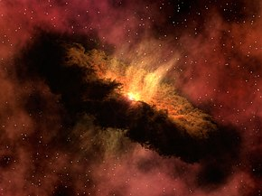
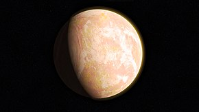
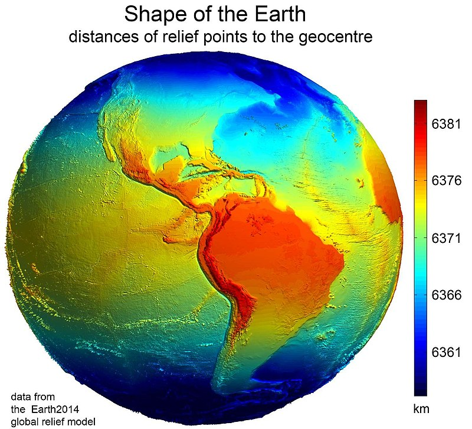

The quran says that "the heavens and the earth were joined together as one unit, before We clove them asunder"(21:30). Following this big explosion,Allah "turned to the sky, and it had been (as) smoke. He said to it and to the earth: 'Come together, willingly or unwillingly.
How many stars in the universe
Using the Milky Way as our model, we can multiply the number of stars in a typical galaxy (100 billion) by the number of galaxies in the universe(2 trillion). The answer is an absolutely astounding number. There are approximately200 billion trillion stars in the universe. Or, to put it another way,200 sextillion
How many planets in the universe
If you like big numbers, the exact number is around10,000,000,000,000,000,000,000,000! All of these planets in the universe orbit around different stars and make up their own solar systems and galaxies. Our solar system, where our planet (Earth) belongs, is also home to a few other planets too.
When people say "the world" they usually mean Earth, especially in a cultural and geopolitical sense.Humans and all other known living things live in this world. Sometimes"world" means another planet. Before people discovered thatEarth is the planet, they often used "World" to mean "Universe".
Earth is the third planet from the Sun and the only place known in the universe where life has originated and found habitability. Earth is the only planet to sustain liquid surface water, with ocean water extending over 70.8% of the planet, making it an ocean world. Most of all other water is retained in Earth's polar regions, with large sheets of ice covering ocean and land, dwarfing Earth's groundwater, lakes, rivers and atmospheric water. The other 29.2% of the Earth's surface is land, consisting of continents and islands, and is widely covered by vegetation. Below the planet's surface lies the crust, consisting of several slowly moving tectonic plates, which interact to produce mountain ranges, volcanoes, and earthquakes. Inside the Earth's crust is a liquid outer core that generates the magnetosphere, deflecting most of the destructive solar winds and cosmic radiation.
Earth has a dynamic atmosphere, which sustains Earth's surface conditions and protects it from most meteoroids and UV-light at entry. It has a composition of primarily nitrogen and oxygen. Water vapor is widely present in the atmosphere, forming clouds that cover most of the planet. The water vapor acts as a greenhouse gas and, together with other greenhouse gases in the atmosphere, particularly carbon dioxide (CO2), creates the conditions for both liquid surface water and water vapor to persist via the capturing of energy from the Sun's light. This process maintains the current average surface temperature of 14.76 °C, at which water is liquid under atmospheric pressure. Differences in the amount of captured energy between geographic regions (as with the equatorial region receiving more sunlight than the polar regions) drive atmospheric and ocean currents, producing a global climate system with different climate regions, and a range of weather phenomena such as precipitation, allowing components such as nitrogen to cycle.
Earth is rounded into an ellipsoid with a circumference of about 40,000 km. It is the densest planet in the Solar System. Of the four rocky planets, it is the largest and most massive. Earth is about eight light-minutes away from the Sun and orbits it, taking a year (about 365.25 days) to complete one revolution. The Earth rotates around its own axis in slightly less than a day (in about 23 hours and 56 minutes). The Earth's axis of rotation is tilted with respect to the perpendicular to its orbital plane around the Sun, producing seasons. Earth is orbited by one permanent natural satellite, the Moon, which orbits Earth at 384,400 km (1.28 light seconds) and is roughly a quarter as wide as Earth. Through tidal locking, the Moon always faces the Earth with the same side, which causes tides, stabilizes Earth's axis, and gradually slows its rotation.
Formation
ins>

The oldest material found in the Solar System is dated to 4.5682+0.0002
−0.0004 Ga (billion years) ago.[36] By 4.54±0.04 Ga the primordial Earth had formed.[37] The bodies in the Solar System formed and evolved with the Sun. In theory, a solar nebula partitions a volume out of a molecular cloud by gravitational collapse, which begins to spin and flatten into a circumstellar disk, and then the planets grow out of that disk with the Sun. A nebula contains gas, ice grains, and dust (including primordial nuclides). According to nebular theory, planetesimals formed by accretion, with the primordial Earth being estimated as likely taking anywhere from 70 to 100 million years to form.[38]
Estimates of the age of the Moon range from 4.5 Ga to significantly younger.[39] A leading hypothesis is that it was formed by accretion from material loosed from Earth after a Mars-sized object with about 10% of Earth's mass, named Theia, collided with Earth.[40] It hit Earth with a glancing blow and some of its mass merged with Earth.[41][42] Between approximately 4.1 and 3.8 Ga, numerous asteroid impacts during the Late Heavy Bombardment caused significant changes to the greater surface environment of the Moon and, by inference, to that of Earth.[43]
After formation

As the molten outer layer of Earth cooled it formed the first solid crust, which is thought to have been mafic in composition. The first continental crust, which was more felsic in composition, formed by the partial melting of this mafic crust.[50] The presence of grains of the mineral zircon of Hadean age in Eoarchean sedimentary rocks suggests that at least some felsic crust existed as early as 4.4 Ga, only 140 Ma after Earth's formation.[51] There are two main models of how this initial small volume of continental crust evolved to reach its current abundance:[52] (1) a relatively steady growth up to the present day,[53] which is supported by the radiometric dating of continental crust globally and (2) an initial rapid growth in the volume of continental crust during the Archean, forming the bulk of the continental crust that now exists,[54][55] which is supported by isotopic evidence from hafnium in zircons and neodymium in sedimentary rocks. The two models and the data that support them can be reconciled by large-scale recycling of the continental crust, particularly during the early stages of Earth's history.[56]
New continental crust forms as a result of plate tectonics, a process ultimately driven by the continuous loss of heat from Earth's interior. Over the period of hundreds of millions of years, tectonic forces have caused areas of continental crust to group together to form supercontinents that have subsequently broken apart. At approximately 750 Ma, one of the earliest known supercontinents, Rodinia, began to break apart. The continents later recombined to form Pannotia at 600–540 Ma, then finally Pangaea, which also began to break apart at 180 Ma.[57]
Geophysical characteristics

Size and shape
Main article: Figure of the Earth
Further information: Earth radius, Earth's circumference, Earth curvature, and Geomorphology
See also: List of highest mountains on Earth
Earth's western hemisphere showing topography relative to Earth's center (instead of to mean sea level, as in common topographic maps)
Earth has a rounded shape, through hydrostatic equilibrium,[85] with an average diameter of 12,742 kilometers (7,918 mi), making it the fifth largest planetary sized and largest terrestrial object of the Solar System.
Due to Earth's rotation it has the shape of an ellipsoid, bulging at its Equator, reaching 43 kilometers (27 mi) further out from its center of mass than at its poles.[86][87] Earth's shape furthermore has local topographic variations. Though the largest local variations, like the Mariana Trench (10,925 meters or 35,843 feet below local sea level),[88] only shortens Earth's average radius by 0.17% and Mount Everest (8,848 meters or 29,029 feet above local sea level) lengthens it by only 0.14%.[n 5][90] Since Earth's surface is farthest out from Earth's center of mass at its equatorial bulge, the summit of the volcano Chimborazo in Ecuador (6,384.4 km or 3,967.1 mi) is its farthest point out.[91][92] Parallel to the rigid land topography the Ocean exhibits a more dynamic topography.[93]